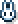
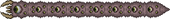
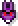

Bosses
Bosses are aggressive, resilient enemies that offer a substantial challenge to players. Defeating a boss is usually instrumental in advancing the game in some way or another, for example, granting the player a new material for a pickaxe of a higher tier. Each has its own particular way of being summoned. For example, most bosses have associated summoning items that can be used to spawn them manually under certain conditions, while there are others that will appear after the player interacts in a certain way with the environment. Event bosses will only appear during their respective events and leave when the event ends. Mini-bosses also exist and appear only during special events, expressing the same amount of difficulty as many normal bosses. Their health has a huge range: On Classic Mode it ranges from 1,000 to 273,000.
Boss Overview
| Boss | Name | Biome | Difficulty | Summon Item |
|---|---|---|---|---|
 |
King Slime | Forest |  |  |
 |
Eye of Cthulhu | Surface |  |
 |
|  | Eater of Worlds | Corruption |  |
|
 |
Brain of Cthulhu | Crimson |  |  |
 |
Queen Bee | Underground Jungle | |
 |
 |
Skeletron | Dungeon |  |
 |
 |
Deerclops | Snow |  |
|
 |
Wall of Flesh | Hell |  |